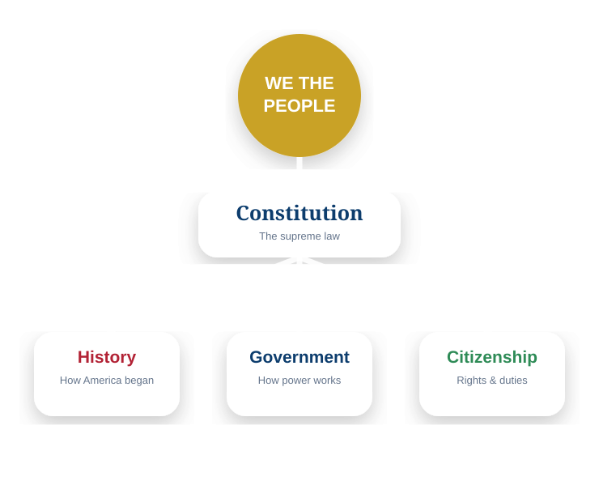
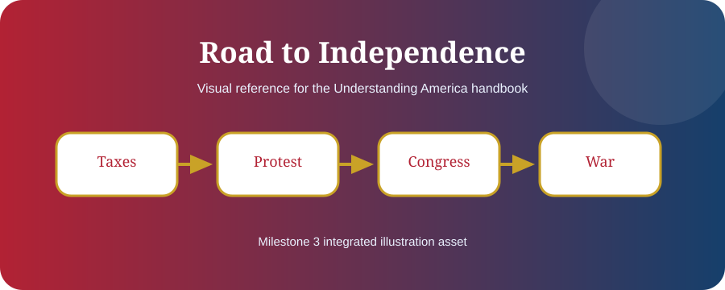

Chapter 8
Separation of Powers and Checks & Balances
The Constitution divides power so no branch can dominate the others.
Understanding is stronger than memorization. This chapter connects facts to meaning and real civic life.
Learning Objectives
- Explain separation of powers
- Explain checks and balances
- Identify how branches limit each other

Why Divide Power
The founders feared tyranny. They believed liberty was safer when power was divided among different institutions.
Three Branches
Congress makes laws. The President enforces laws. The courts interpret laws and the Constitution.
Checks and Balances
The President can veto bills, Congress can override vetoes and control spending, the Senate confirms appointments, and courts can review laws and executive actions.
No One Is Above the Constitution
Every branch receives authority from the Constitution and is limited by it. Officials swear loyalty to the Constitution, not to a person or political party.
Remember ThisPower is divided.
Milestone 3 Visual Pack: This chapter is now tagged for publication artwork, editorial review, glossary linking, and future citation verification. The final edition should replace any remaining placeholder diagram with a chapter-specific SVG, map, or timeline.

Chapter Summary
- Power is divided.
- Each branch checks the others.
- The Constitution is above all branches.
Key Terms
Constitution · Government · Rights · Citizenship · Federalism · Representation · Rule of Law
Review Questions
- What is the main idea of this chapter?
- How does this chapter connect to the Constitution?
- Why is this topic important for citizenship?
- Give one real-life example from this chapter.